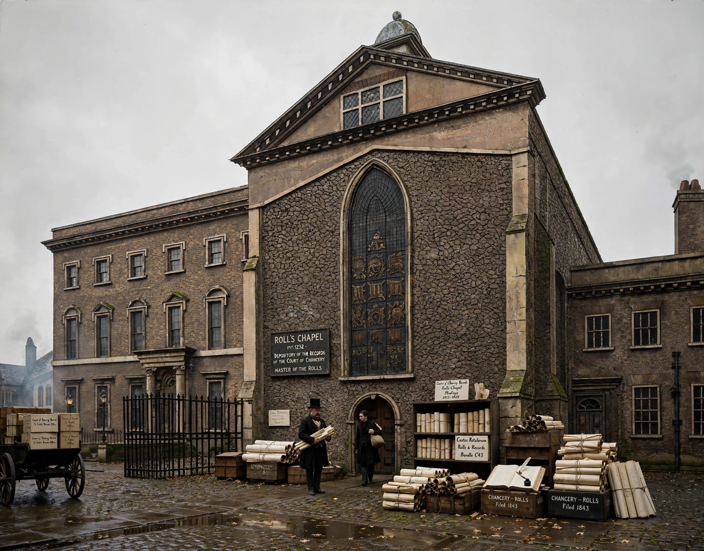

Court of Chancery
From Wikipedia, the free encyclopedia

The Court of Chancery was a court of equity in England and Wales that operated from the fifteenth century until its merger into the High Court by the Judicature Acts 1873–75. Originating in petitions to the Lord Chancellor as 'keeper of the king's conscience', it developed the law of trusts, mortgages, injunctions and specific performance — the great corrective to the common law's rigidity — and, by its final century, a byword for delay immortalised in Dickens' Bleak House.
Equity's rise
Where common law gave damages and strict rules, Chancery gave conscience-based relief: it enforced uses and trusts (protecting property held for others), relieved against fraud, penalties and accidents, and decreed specific performance of contracts. By the seventeenth century, under Lord Ellesmere and Bacon, equity had become a system rivalling the common law, with its own precedents ('equity follows the law' yet corrects it) — and Selden's gibe that it varied with the Chancellor's foot length.
Decline and fusion
Eighteenth- and nineteenth-century Chancery drowned in its own procedure — the Jarndyce case of Bleak House is barely satire (real suits ran generations). The Judicature Acts fused the administration of law and equity into one High Court with a Chancery Division (which still handles trusts, probate and business property), and exported the fusion to most common-law jurisdictions; Delaware's Court of Chancery — America's corporate court — survives as a pure court of equity in name and spirit.